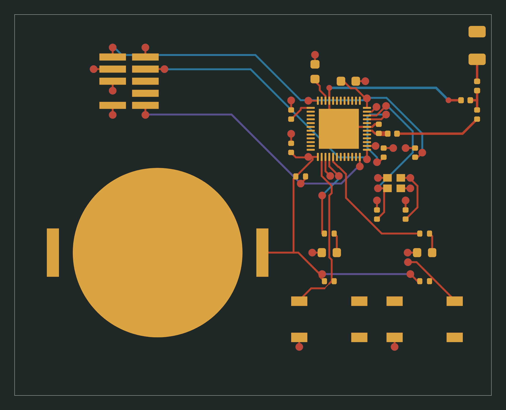
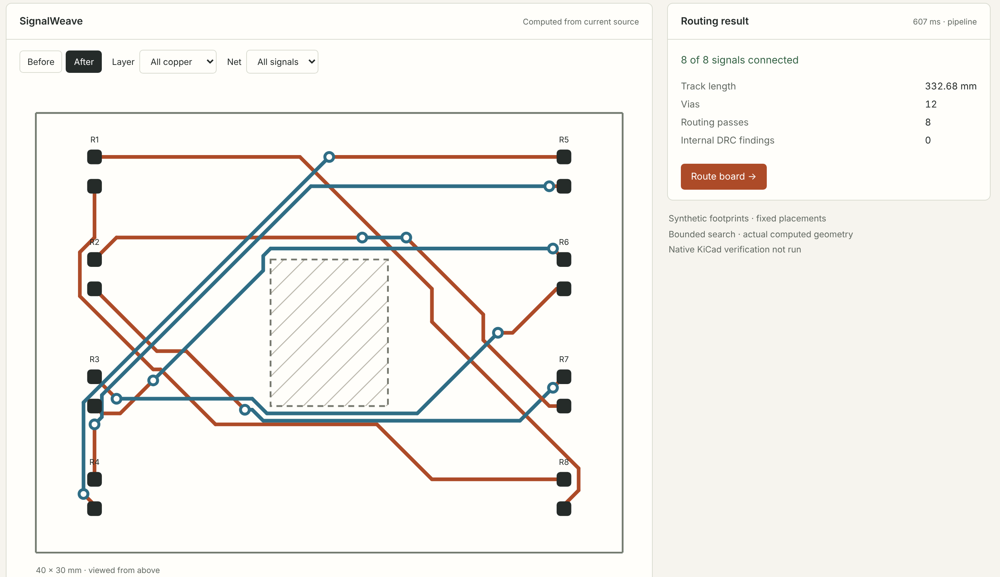
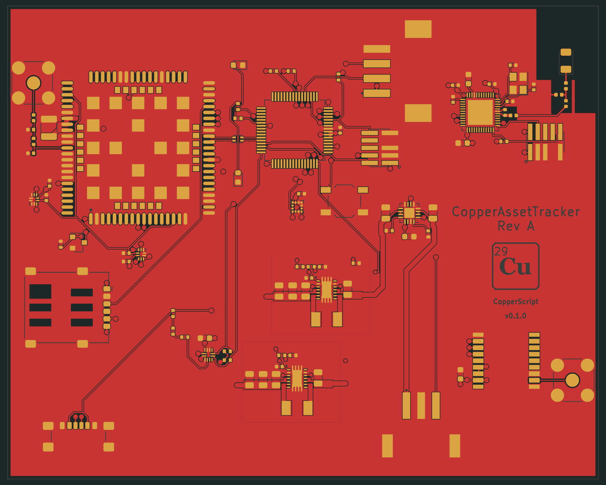

OPEN SOURCE · PCB DESIGN AS CODE
CopperScript
Hardware intent, written in code.
A typed language and compiler for printed circuit boards, built so that people and AI agents can make good design decisions and check every one of them.
github.com/andenore/CopperScript · andenore.github.io/CopperScript
01 / THE PROBLEM
A schematic says what connects.
It rarely says why.
A CAPACITOR
…protects one particular pin.
Its value is on the schematic. Which supply pin it decouples, and how close it must sit, is not.
A CONVERTER
…has a critical current loop.
The hot loop and its switch node decide the board’s emissions. A netlist shows neither.
A RADIO
…needs geometry and a return path.
Reference layouts and keepouts live in application notes, not in the design file.
In a graphical CAD tool this intent stays in the designer’s head, the datasheet and a PDF. An AI agent sees none of it, so it cannot respect it or be checked against it.
02 / THE IDEA
Put the intent in the source,
and let a compiler check it.
READABLE
Plain text, under version control
A board is .copper source: reviewed, diffed and merged like software. Libraries are versioned and pinned by hash.
TYPED
Facts with units and roles
Voltages, currents, rise times and tolerances carry units. Pins carry domains, directions, ratings and roles such as decoupling or switch node.
CHECKED
Every decision gets feedback
Electrical rules, power states, simulation, EMI screening, routing and DRC all read the same source and report located findings.
The same source then drives placement, routing, manufacturing files and KiCad export, so the intent is never retyped and never lost between tools.
03 / HOW THE LANGUAGE WORKS
A small set of typed building blocks.
| Block | What it declares |
|---|---|
| part · device | A component’s pins, domains, directions, ratings and roles; a device’s silicon pads, power domains and peripheral mux options |
| component | One placed instance of a part, with its value, footprint and relationships such as decouples = U1.VDD |
| net · supply | Connections, and the rails that power them, with voltage and current budgets |
| module | A reusable circuit with ports, instantiated on a board or simulated alone |
| constraint · mechanical | Outline, holes, keepouts, placement, routing rules, antennas and emission standards |
| power_state · bench | Steady-state rail scenarios, and simulation benches with measures and limits |
| physical_macro · panel · build | Reusable hard layouts, fabrication panels and build settings, in source |
04 / FACTS AND RELATIONSHIPS
Parts hold facts; boards hold intent.
library: part definition
part BME280 {
category = "sensor.environmental";
pin VDD {
number = "1";
domains = "power";
voltage_min = 1.71V;
voltage_max = 3.6V;
}
}
Ratings come from the datasheet, with units. Put 5 V on this pin and the compiler says “5 V exceeds the pin maximum 3.6 V”, with the line.
board: component
component C_MCU: CAPACITOR {
value = 100nF;
role = decoupling;
decouples = "U_MCU.VDD";
}
A relationship, not just a value. The pin association survives compilation and steers decoupling placement and how the capacitor feeds the pin.
05 / PHYSICAL INTENT
Mechanics live in the same file.
mechanical {
outline rectangle {
width = 40mm; height = 30mm;
}
hole H1 {
position = (3mm, 3mm); diameter = 2.2mm;
}
}
constraint fixed_placement(R_ANCHOR) {
x = 7mm; y = 8mm; side = front;
}
constraint antenna(ANT1.FEED) {
bands = "2400 MHz-2483.5 MHz";
ground = GND;
}
Board shape and fit
Outlines, curves, cutouts, holes, keepouts, component heights and datums.
Placement and routing
Fixed poses, regions, groups, widths, clearances, pairs and length matching.
Synthesized copper
Declare a band and a region; a full-wave model tunes the antenna trace.
06 / FROM SOURCE TO COPPER
Every transformation stays inspectable.
Describe
Parts, nets, supplies and constraints in .copper
source + lock
Check & simulate
Electrical rules, power states and benches
IR + results
Place, route & screen
Bounded pipeline, hard macros, EMI screening
board + report
Fill, check & plot
Native zone fill, DRC, Gerbers and panels
fab files
Review & qualify
CopperReview, then lab and prototype evidence
a decision
Each stage writes JSON with a schema and the SHA-256 of its inputs. Changed inputs invalidate old evidence, and missing evidence stays visible instead of turning into a pass.
07 / A COMPLETE SMALL BOARD
A Bluetooth coin-cell board in one file.
board Nrf52CoinCell {
import nordic "…/CopperLib/…/nordic/nrf52832";
component U_NRF: nordic.NRF52832_QFAA;
component BT1: keystone.KEYSTONE_3034;
component C_VDD1: CAPACITOR { value = 100nF; }
net VBAT { BT1.POS; U_NRF.VDD_1; C_VDD1.1; … }
supply VBAT { voltage = 3V; external = true; }
constraint fixed_placement(BT1) { x = 15mm; y = 25mm; }
physical_macro nordic-antenna-trial:
nordic_layout.NRF52832_JOHANSON_SIX_LAYER_TRIAL {
member U1 = U_NRF; member ANT = ANT_BT; …
}
}
27 components and 20 nets on a 50 × 40 mm, six-layer board:
- nRF52832 Bluetooth LE chip
- CR2032 coin-cell holder
- Chip antenna in Nordic’s reference RF layout, reused as a hard macro
- Debug header, crystal, two LEDs, two buttons
Parts and the RF layout come from CopperLib, pinned by hash in copper.lock.
08 / BUILD AND ROUTE A BOARD
Four commands from source to fab files.
1 · CHECK
copper check board.copper --locked
Electrical rules and ratings; every imported package verified against copper.lock.
2 · BUILD
copper build board.copper --locked
Route, fill zones, run DRC and a completion gate; run.json binds every output by SHA-256.
3 · ITERATE
copper issues RUN · copper view RUN
Grouped, located causes and a picture per layer. Fix the source or constraints, then build again.
4 · EXPORT
copper export-manufacturing --run run.json
Gerbers, drills, netlist and positions, read back against the board; refuses a failed or stale run.
The fab profile and placement and routing settings live in the board’s build block, so the commands stay short. KiCad is optional, as an independent cross-check.
09 / THE RESULT
The coin-cell board, built in 3 seconds.

19 / 19
signal nets routed, plus a ground plane
3.1 s
for check, route, fill, DRC and gate
213
tracks, with 44 vias
0
DRC violations, 0 unconnected
Run today with make EXAMPLE=nrf52 route. Drawn by copper render from the native Gerber plot. Placement is provisional and the board is not production-qualified.
10 / LIVE ROUTING LAB
Route a board in your browser.

The real Rust routing pipeline, compiled to WebAssembly, runs in a browser worker. Nothing is precomputed.
- 8 of 8 crossing signals, 12 vias, 0 DRC findings, in about 0.6 s
- Edit the source, route again, compare before and after
- Block the corridor: open nets are reported, never faked
andenore.github.io/
CopperScript/demo/routing
11 / WHY IT SUITS AI AGENTS
An agent makes good decisions when every decision gets fast, located and honest feedback.
CopperScript turns board design into that loop: text the agent can write, facts it can retrieve, and a compiler that answers in seconds.
12 / THE AGENT LOOP
Retrieve, write, check, fix. Repeat.
Orient
A guide bundled with the compiler, one topic at a time
agent-guide
Retrieve
Search pinned libraries; inspect one part’s contract
library inspect
Write
Compose the board in .copper source
board.copper
Check
Located findings, codes, hints and fixes as JSON
check --json
Diagnose
Explain a code, query the design, view an issue
explain · issues
The agent never has to read the whole manual, re-parse its own source or write a one-off script to see what went wrong. The compiler already answers those questions.
13 / DESIGNED FOR GOOD DECISIONS
Six choices that keep an agent honest.
01
Text, not clicks
The agent writes source it can diff and explain. No GUI to drive, no hidden state.
02
Retrieve, don’t guess
Parts come from pinned libraries with datasheet facts. Unknown facts stay unresolved.
03
Units catch nonsense
Typed quantities and pin roles turn a wrong voltage or a fighting output into an error.
04
Compact, located feedback
Codes, lines, hints and fixes in versioned JSON. Summaries are bounded; details on request.
05
No silent passes
A missing input never becomes a pass. Stale results are refused. Screening is never a verdict.
06
Fix the method
Routing failures improve generic algorithms, compared with reference layouts, not one board.
14 / WHAT THE AGENT SEES
copper check --json, on a broken board.
{ "code": "SUPPLY_VOLTAGE_HIGH",
"severity": "error",
"subject": "U1.VDD",
"message": "5 V exceeds the pin
maximum 3.6 V",
"location": { "line": 15 } }
{ "code": "UNMARKED_PIN",
"severity": "warning",
"subject": "U1",
"hint": "connect them, or declare
intent with no_connect
U1.PA0, U1.TX { reason }" }
Located
File, line and subject: the agent edits the right place, not a guess.
Named
A stable code that copper explain describes, so the agent learns the rule.
Deliberate
An open pin needs a no_connect with a reason, so omissions and decisions differ.
15 / PEOPLE STAY IN THE LOOP
Humans review; the next run listens.
CopperReview in the browser
Schematic, layout, 3D, EMI and assembly views of the compiled board, running the same compiler as WebAssembly. Select parts, nets or a region, write what should improve, cite issue ids, and export a review the next LLM-assisted run can read.
The viewer is read-only: notes never edit the board or its constraints.
Clear ownership
| Repository | Owns |
|---|---|
| CopperScript | Language, compiler and generic algorithms |
| CopperLib | Versioned parts, circuits and contracts |
| A board repo | Composition and its evidence |
An agent knows where a change belongs, so a fix for one board does not leak into the compiler.
16 / INCLUDED TODAY
One compiler, from source to fab files.
Electrical checks
Ratings, power states, buses, open pins
Versioned libraries
Pinned by hash, searchable contracts
Mechanical design
Outlines, holes, keepouts, visual editor
Place & route
Bounded, experimental, well diagnosed
Hard macros
Reusable layouts in native .copper
Antenna synthesis
Full-wave FDTD tuning and matching
Circuit simulation
AC, noise, transient, Monte Carlo, SPICE
EMI screening
Hot loops, conducted spectra, cables
Native fab output
Fill, DRC, Gerbers, drills, read-back
Panelization
Rails, tabs, mouse bites, fab presets
KiCad export
Projects with footprints and 3D models
Editor & review
Language server, VS Code, CopperReview
17 / ANALYSIS IN THE COMPILER
Real numbers from the examples.
CIRCUIT SIMULATION
66.8 nV/√Hz
preamp output noise at 1 kHz. The bench’s own hand estimate: about 67. Five benches, with a 200-board Monte Carlo, in about 0.1 s.
EMI SCREENING
+49.6 dB
buck converter over the CISPR 32 class B average limit with no input filter; 6.4 dB under with an LC filter (and a 2 A load).
ANTENNA SYNTHESIS
2.37 GHz
monopole resonance after full-wave tuning, from 2.72 GHz for the quarter-wave template; 86 % radiation efficiency.
An agent can ask “is this good?” and get a number tied to the source, instead of a guess. Every one is evidence for review, not a qualification.
18 / A REAL DESIGN
The asset tracker, routed natively.

STM32 host, LTE Cat-1 bis, GNSS, Bluetooth and motion sensing on a six-layer, 100 × 80 mm board.
87
footprints
60 / 60
ordinary nets connected
259
vias, 1191 track segments
0
native DRC violations
19 / WHAT IT DOES NOT CLAIM
Evidence, not approval.
| Result | What it does not establish |
|---|---|
| Clean ERC and native DRC | Electrical, RF, power, assembly or CAM qualification |
| A routed board | That the router will close another design: routing is experimental |
| Passing simulation benches | Board behaviour: layout parasitics are not in the benches yet |
| EMI screening | EMC compliance: it ranks likely sources and never reports a pass |
| A synthesized antenna | Performance in the enclosure: bench tuning and testing remain |
This honesty is part of what makes the tool safe for agents: a result says exactly what was checked, so nothing unverified looks finished.
20 / GET STARTED
Start with a small circuit.
git clone https://github.com/andenore/CopperScript
cd CopperScript
cargo install --locked --path crates/copper
# orient, then check and compile
copper agent-guide
copper check examples/valid_board/board.copper
# simulate a low-noise preamp
copper sim examples/simulation/preamp/board.copper
Website
andenore.github.io/CopperScript
Libraries
github.com/andenore/CopperLib
Review in the browser
andenore.github.io/CopperReview